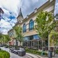
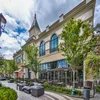

Discover the beautiful area of Farmington Utah!
Page Visits:
Discover Farmington, Utah!
Welcome to the community of Farmington, Utah! Our beautiful community is bringing even more amazing options for our visitors to enjoy. We invite you to discover and explore our neighborhoods, stunning landscapes, and thriving businesses. Come and learn about the treasures of Farmington. We are excited to show you all that our community has to offer!
Fun Facts About Farmington!
Population:
26,169
Known For:
Home of the State's largest family amusement park
Average Age:
30 Years
Average Income:
$53,873
Average House Value:
$365,900
Climate:
Winter temperature is 24°F Summer temperature is 89°F
Elevation:
4,305'
 

Explore
Farmington has a number of parks, and the city features scenic trails that offer facilities for hiking, biking, and horse riding. The Lagoon Amusement Park is also one of the major attractions in the city. Additionally, one can visit Station Park for dining, shopping, and other recreational opportunities.
Up Coming Events
Chamber of Commerce Meet and Greet
Join us for the Chamber of Commerce meet and greet on Wednesday at 7pm!
Drive in Movie
Join us for a drive in movie of The Wizard of Oz in the park at 8:00 p.m.!
Hay Ride
Join us for a hay ride every Friday at 7:00 p.m.!
Rest
Farmington has a variety of hotels to fit every budget and style. From five star hotels to budget-friendly hotels, you will find a great place to stay. Whether you are looking for a relaxing getaway or a fun-filled family vacation, Farmington has it all.
Shop
Farmington is home to Station Park. You'll find a place that's much more than a shopping center. Station Park is a place to gather and reconnect, a place to relax and get rejuvenated. Station Park has many shops from charming boutiques to large name brand stores. Farmington Station Park has many options for everyone!
Dine
Farmington, Utah has a variety of dining options, Farmington has many restaurants, including places for date night, American food, and other cuisines. Farmington has something for everyone!
Business
Farmington prides itself on a strong and vibrant business community, boasting more than 2,000 registered businesses. From corporate headquarters, to industry, to sole proprietorship, the Town enjoys a diverse collection of commercial enterprises. Farmington has one of the largest Class A office space inventories in the greater Hartford region, as well as a large inventory of industrial commercial space.